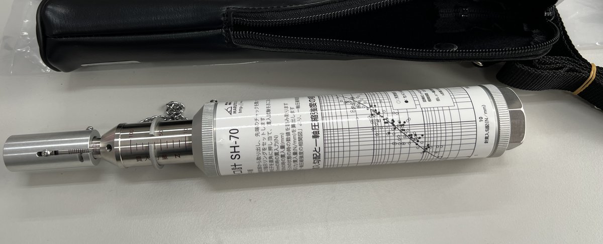
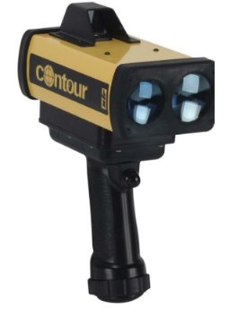
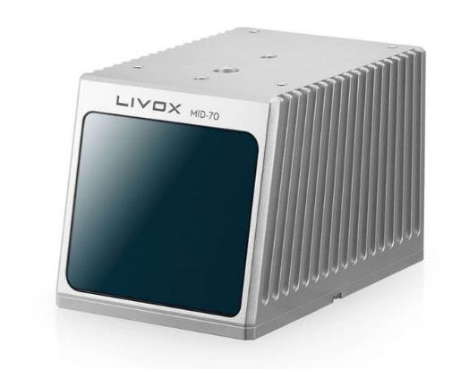
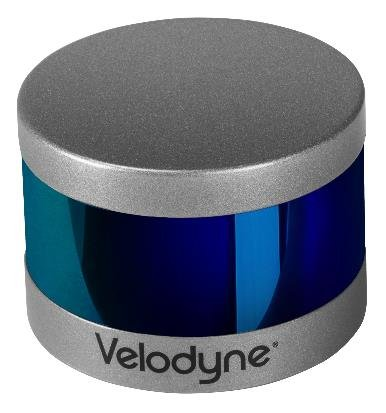
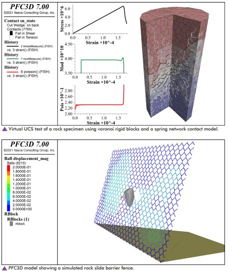

Facilities
The laboratory’s equipment is used mainly to investigate the strength and deformability of rock materials, and to support field investigation and engineering survey.
Rock Testing Equipment

RTX-1000 Triaxial Rock Testing System
Rock is commonly found under high confining pressure, where its behaviour is quite unlike that at low confinement: strength rises markedly and the material turns from brittle to ductile. The triaxial system is therefore the central instrument of rock mechanics. It was donated by our alumnus Sheng-Biao Chen and purchased through Prof. Tai-Tien Wang.
| Model | GCTS RTX-1000 (USA) |
| Maximum load | 1000 kN (about 100 tonnes) |
| Maximum confining pressure | 70 MPa (about 2000 m depth) |
| Tests | Uniaxial, triaxial and indirect tensile |
| External service | Not currently offered; contact the head of the laboratory |

Rock Core Cutter
The cutter trims drilled cores to the size the test procedure requires. Ours was designed by a domestic manufacturer, uses a non-draining design with the cooling water held internally, and cuts cores up to 60 mm in diameter.

Point Load Tester
Originally developed at Imperial College London: a hydraulic jack drives conical platens into the specimen, and the load at failure gives an estimate of uniaxial compressive strength. Ours is an ELE EL-77 (UK), maximum load 55 kN, largest specimen diameter 101.6 mm.

Ultrasonic Pulse Velocity Tester
Wave velocity together with density gives the dynamic elastic modulus indirectly. Ours is a Humboldt HC-6390 (USA), conforming to ASTM C597, measuring range 0–3000 ± 0.1 μs.

Needle Penetrometer
Taiwan’s sedimentary rocks are often too weak to prepare a standard specimen, so conventional uniaxial compression frequently cannot be run at all. The needle penetration test presses a sewing needle into the rock surface and measures force against depth; their ratio, the needle penetration index, gives an estimate of uniaxial compressive strength from nothing more than a small flat face. Ours is a MARUTO SH-70 (Japan), with needles to JIS S 3008.
Field Investigation Instruments
Field investigation is the first step towards understanding a site. Survey locations are often remote and cannot take large instruments, so a set of small tools is needed to gather preliminary information about the rock mass.
| Instrument | Model | Specification | Use |
|---|---|---|---|
| Schmidt hammer | MATEST C380 (USA) | Impact energy 0.225 m-kg | Estimating UCS between 10 and 70 MPa |
| Geological compass | IWAMOTO MINERAL type 55 (Japan) | 80 × 66 × 20 mm | Measuring the attitude of strata |
| Geological hammer | — | — | First estimate of strength; obtaining fresh samples |
| Profile comb | — | — | Measuring and tracing joint roughness |
| Feeler gauge | — | — | Measuring joint aperture |
 Schmidt hammer
Schmidt hammer Geological compass
Geological compass Geological hammer
Geological hammer Profile comb
Profile comb Feeler gauge
Feeler gaugeSurveying Instruments
Surveying is one of the foundations of geotechnical and resources engineering; good survey results are a powerful aid to the analysis and design that follow.
| Instrument | Model | Specification | Use |
|---|---|---|---|
| Level | Topcon AT-F6 (Japan) | 2.5 mm error per kilometre | Levelling on site |
| Theodolite | Nikon NT-2D (Japan) | — | Horizontal and vertical angles |
| Total station | Leica TS06-plus (Germany) | Range 5–150 m; 5 cm orientation accuracy at 100 m | Angle, distance and elevation together |
| Laser rangefinder | Contour XLR | — | Quick distance measurement in the field |
| GPS receiver | — | — | Positioning and survey work |
 Level
Level Theodolite
Theodolite Total station
Total station
Laser rangefinder GPS receiver
GPS receiver3D Scanning
LiDAR scans a surface with laser pulses and returns three-dimensional coordinates. It is the main source of data for our point cloud analysis and displacement monitoring: a dense cloud of an entire outcrop or structure can be captured quickly, without touching the target.
We are particularly interested in consumer-grade units. High-end scanners are expensive and bulky, which makes long-term deployment impractical; if a consumer device is accurate enough for the displacements engineering cares about, the cost of long-term monitoring falls sharply.
| Instrument | Model | Class | Use |
|---|---|---|---|
| LiDAR | Livox Mid-70 | Consumer-grade | Long-term monitoring of slopes and retaining structures; outcrop scanning |
| LiDAR | Velodyne | Consumer-grade | Point cloud capture and performance comparison |

Livox Mid-70
Velodyne LiDARSoftware
Numerical analysis is one of the laboratory’s core activities, which makes software as important as any physical instrument.
PFC 7.0
Itasca’s discrete element package, the mainstream tool in international rock mechanics research. We use it to model the discrete behaviour of rock, and built the particulate interface, seepage and biconcave bond models on top of it.
- Models the discrete behaviour of a wide range of rocks
- Builds discrete fracture networks
- Couples with FLAC, bridging continuum and discrete analysis
- Supports thermo-mechanical coupling

PFC3D: uniaxial compression test and a rockslide barrier